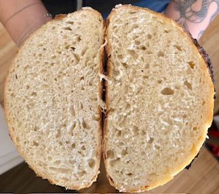

Sourdough Bread

Description
This is a home recipe, tried and tested! Sourdough bread is not just delicious it is good for your gut.
With this recipe you will be able to create a fluffly delicate yet crunchy loaf of sourdough.
Ingredients
- Sourdough Starter
- All Purpose Flour
- Water
Steps
- Add Water to Starter and mix
- Add Flour
- Let Rise
- Strech & Fold
- Let Proof
- Shape dough into ball
- Cold Proof in Fridge
- Score
- Bake with lid (Dutch Oven)
- Remove lid and bake to color
- Let Rest & Enjoy!